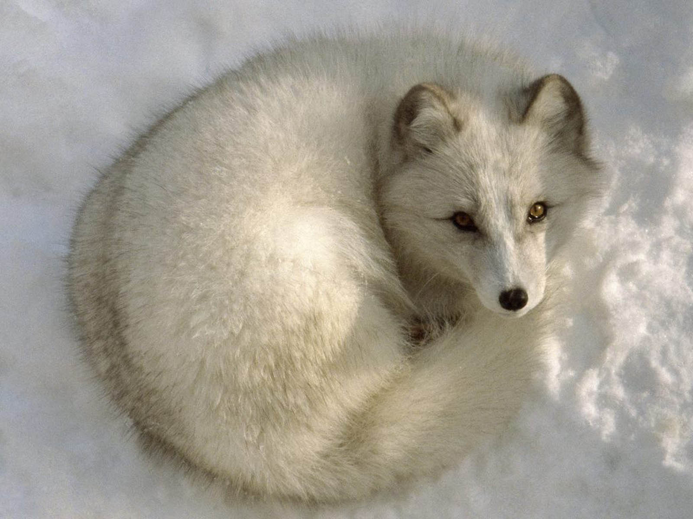
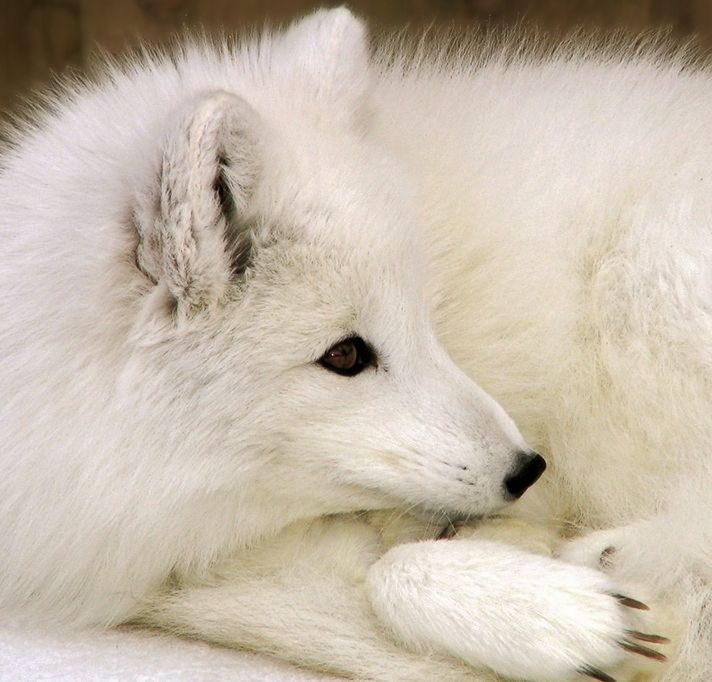
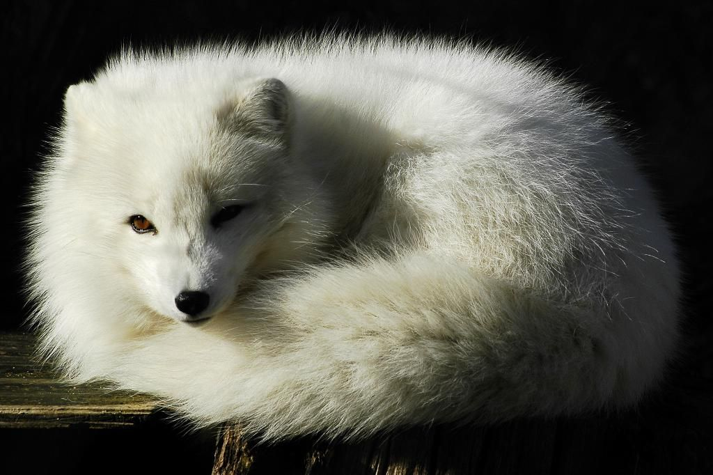
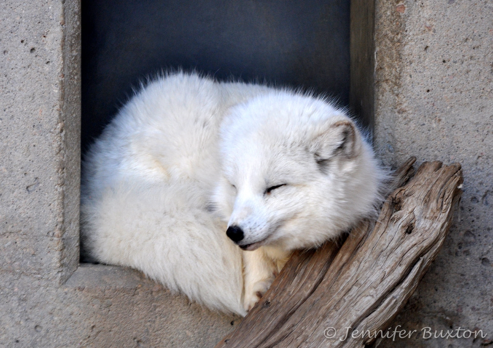
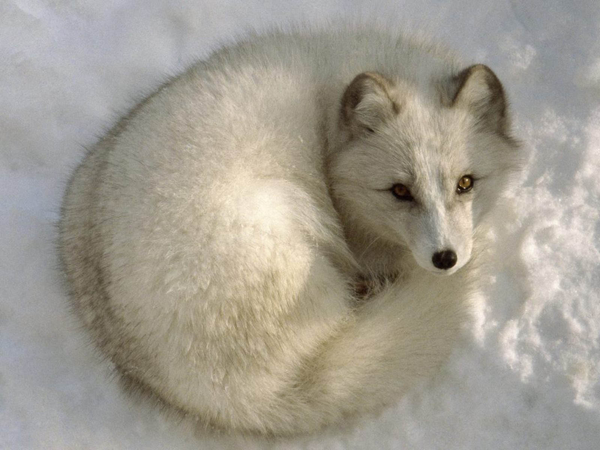
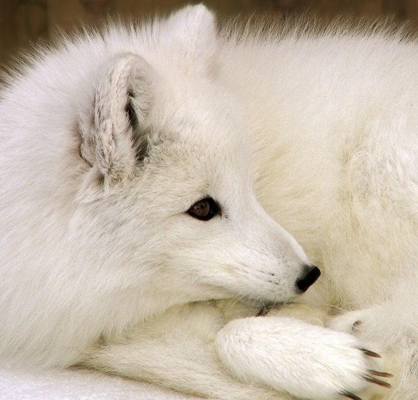
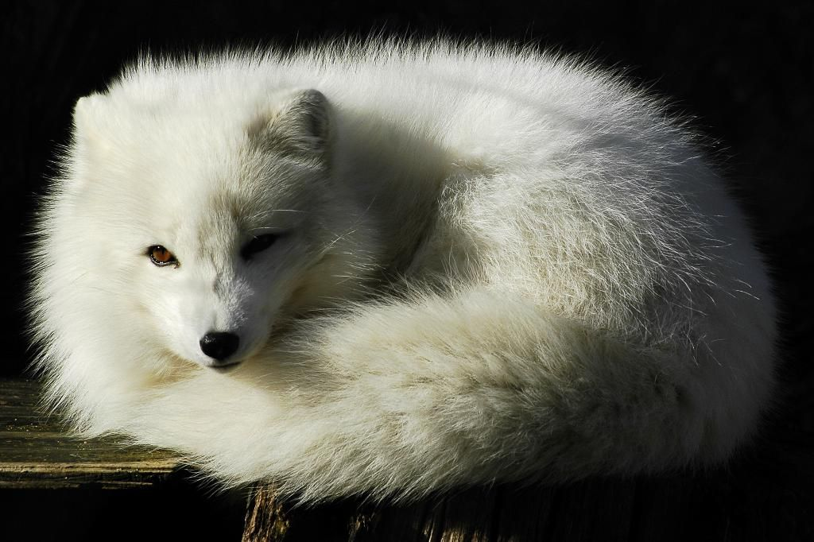
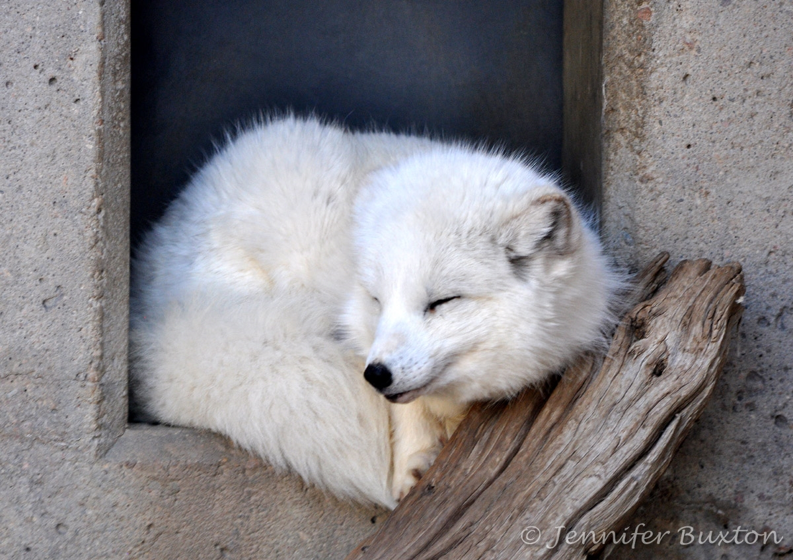

ARCTIC FOX
 







POPULATION SIZE: UNKNOWN
LIFE SPAN: 3-14 YRS
TOP SPEED: 45 KM/H
WEIGHT: 1.4-9.4 KG
HEIGHT: 25-30 CM
LENGTH: 52-55 CM
The Arctic fox is a small fox well adapted to living in cold
environments of Arctic regions.
It has a deep thick fur which is white in winter and brown in summer.
The Arctic fox can stay warm in winter not just because of its thick
coat
but because of its generally rounded body shape with short legs, bushy
tail, small rounded ears, and short muzzle.
Location in Canada
In Canada, the Arctic fox is found in the northern boreal region up to the Arctic, from James Bay to the top of Ellesmere Island

Habits and Lifestyle
Arctic foxes are diurnal animals. They live in a family consisting of one adult male, the young, and two vixens - one a non-breeding female born the year before that helps look after the next litter. Arctic foxes live in dens which they make far beneath the surface of the ground. Their dens have a number of entrances and have been lived in by generations of foxes for centuries. Arctic foxes survive harsh winters and food scarcity by either hoarding food or storing body fat. To locate prey during winter, the fox uses its sense of smell and hearing to find animals moving through tunnels underneath the snow. Arctic foxes are nomadic animals. During the winter, 95.5% of Arctic foxes utilize commuting trips, which remain within the fox's home range. Commuting trips in Arctic foxes last less than 3 days and occur between 0-2.9 times a month.
Diet and Nutrition
Arctic foxes are omnivores and scavengers. They will eat almost any animal, dead or alive. They prefer small mammals but will eat berries, insects, carrion, and even animal or human stools. In winter they usually eat sea mammals and birds, invertebrates, fish, and seals.
Population
Population Numbers
According to IUCN Red List, the world population of Arctic foxes is in the order of several hundred thousand animals. The Arctic fox is common in the tundra areas of Russia, Canada, coastal Alaska, Greenland, and Iceland. Despite legal protection, the adult population in Norway, Sweden, and Finland is estimated to be fewer than 200 individuals, so it is acutely endangered. Overall, currently, Arctic foxes are classified as Least Conern (LC) and their numbers today remain stable.
Population Threats
Arctic foxes are threatened by the fur trade and diseases caught from domestic dogs. Climate change is another threat, as the snow-line shrinks further and further north, reducing the range of the arctic fox and giving way to the red fox, advancing northward.
Ecological Niche
The Arctic fox helps to keep the environment clean by keeping the rodent population down and by eating dead animals.
Fun Facts
- Sometimes an Arctic fox will walk behind a polar bear to eat its food scraps.
- When cold, the fox will wrap its thick bushy tail around itself to keep warm.
- It has a unique heat exchange system that will stop it from shivering until the temperature goes below -70 °C ( -94 °F).
- Arctic foxes that live where the color of the snow is not pure white grow fur with the same grayish color.
- When hunting, the fox must break through thick snow. To do this, the fox jumps up high and then dives headfirst into the snow.
- Arctic foxes have a keen sense of smell. They can smell carcasses that are often left by polar bears anywhere from 10-40 km (6-24 miles). It is possible that they use their sense of smell to also track down polar bears. Additionally, Arctic foxes can smell and find frozen lemmings under 46-77 cm of snow and can detect a subnivean seal lair under 150 cm of snow.
- Arctic foxes have strongly pigmented eyes as protection from the glare of the sun. Sometimes each eye is a different color.
- The Arctic fox can easily hear lemmings burrowing under 4-5 inches (10-12 cm) of snow. When it has located its prey, the fox pounces, and punches through the snow to catch its prey.